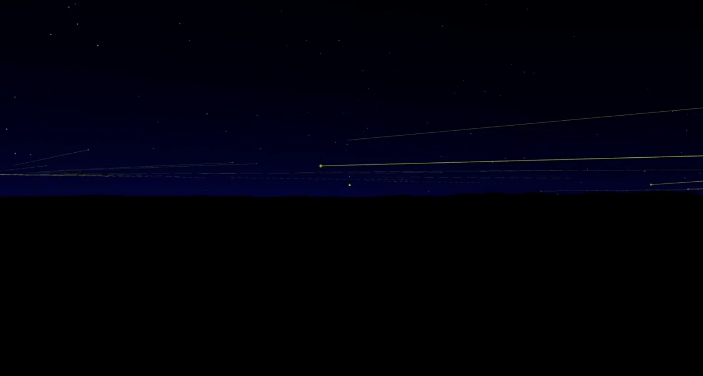
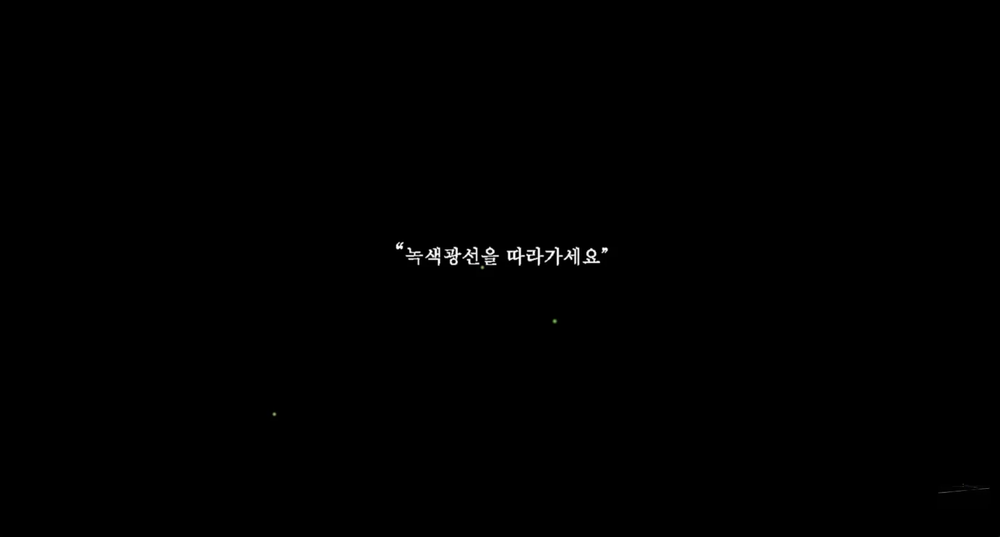

A movement to capture ghosts.
That which is absent yet present. That
which is present yet absent.
That which is absent, yet wished to be
believed present. That which is present, yet wished to be believed absent.
Is this, in the end, a story of belief?
Darkness that
deepens without end.
Afterimages that arise from gazing into the dark.
A kaleidoscope within the darkness. The shadow of a shadow.
The
eye's error. Mistake.
The time and space between here and there, made
by the mistakes of the senses.
How does distrust of vision re-sense the body?
To see by
groping. The act of groping with the eyes.
The time it takes to grow
accustomed to the dark.
What darkness shows.
What darkness makes
one see.
The place seen by eyes accustomed to the dark.
Hiding behind shadows once more. A blanket of darkness.
Darkness is a great blanket that covers me.
It is a place where I become a shadow to erase my shadow.
A place where I cannot see myself, and others cannot see me.
I can be anything, or I can be nothing.
More precisely, I don't have to be anything at all.
I just need to become one with the darkness.
:
In the darkness, anyone's body was just a body.
Darkness made everyone careful. Slowly. No one ran in the dark.
We waited for our eyes to adjust to the darkness.
In the dark, there was no difference between eyes open and eyes
closed.
Eyes adjusting to the darkness wasn't about getting used to the dark
—
it was about the eyes searching desperately for any trace of light.
In a darkness without light, there was nothing to find.
Being in the dark, I began to lose track of where my body ended,
or whether I had a body at all.
Perhaps none of that matters in the darkness.
In a place where boundaries dissolve and everything becomes one mass.
:
"When my body grazes the corner of a desk,
the thought — ah, I'm still here —
a thought about some mass filled with water:
and sometimes I find myself thinking of the dead."
A Depressed Mirror 1, Hwang Ji-woo